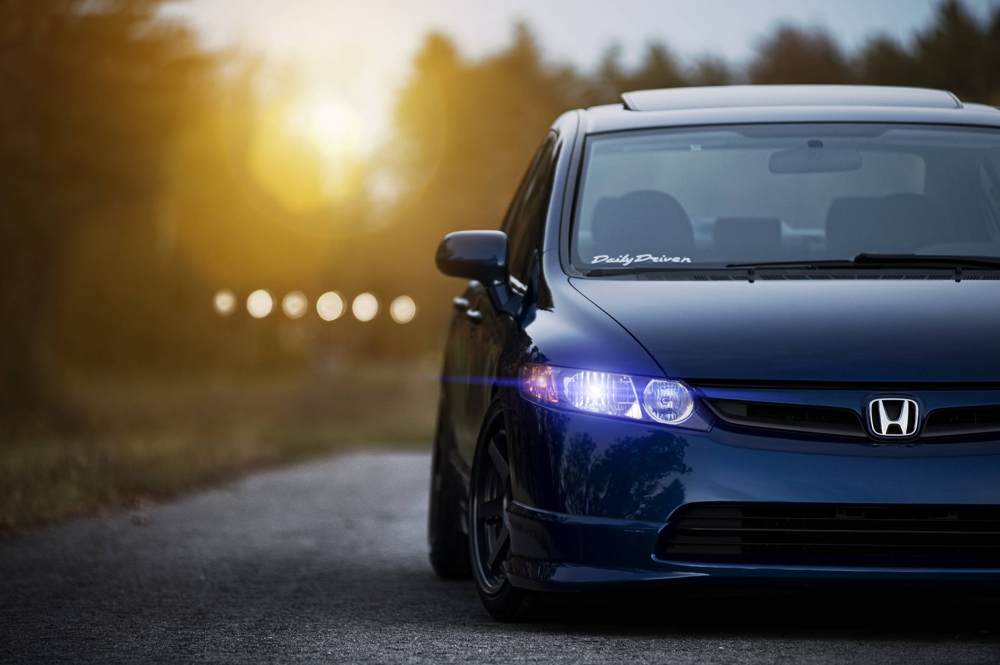

O Civic Black Bull é um famoso Honda Civic Si (geração 8) preto, preparado no Brasil para atingir mais de 1000 cv (1006 cv na versão turbo final). Inicialmente aspirado (400+ cv), tornou-se uma lenda na cena automotiva de arrancada e street racing por superar esportivos de luxo, com preparações da Heav Rap e Rev It Up
Clique aqui para ver mais detalhes.
O "Caso" de Apreensão: Relatos indicam que, ainda em 2007/2008, o Civic Black Bull foi apreendido. O carro é frequentemente citado em vídeos sobre a "história do Civic SI" e a lenda que se tornou, muitas vezes associado ao cenário de preparações intensas e oficinas de alto desempenho.
VIDEO DO CIVIC BLACK BULL ACELERANDO ABAIXO